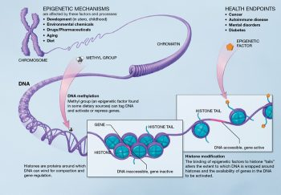
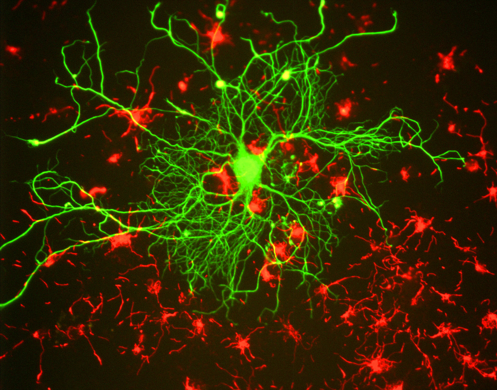

9.4: Epigenetics
What Is the Epigenome, and What Does It Do?
Your genes play an important role in your health, but so do your environment and behaviors, such as exercise and diet (NHGRI, 2020). Epigenetics is the study of how your behaviors and environment can cause changes that affect the way your genes work. Epigenetic changes do not change your DNA sequence, but they can change how your body reads a DNA sequence. Since your environment and behaviors can result in epigenetic changes, it is easy to see the connection between your behaviors and environment, your genes, and your physical and mental health.
The epigenome is a multitude of chemical compounds that can tell the genome what to do. As discussed above, the genome is the DNA that holds instructions for building the proteins that carry out a variety of functions in a cell. The epigenome consists of chemical compounds and proteins that can attach to DNA and direct such actions as turning genes “on” or “off”. The epigenome can control gene expression or the production of proteins in particular cells. When epigenomic compounds attach to DNA and modify its function, they are said to have “marked” the genome. These marks do not change the sequence of the DNA; rather, they change the way cells use the DNA’s instructions.
A human being has trillions of cells, specialized for different functions in muscles, bones, and the brain, and each of these cells carries essentially the same genome in its nucleus. The differences among cells are determined by how and when different sets of genes are turned on or off in various kinds of cells. Specialized cells in the eye turn on genes that make proteins that can detect light, while specialized cells in red blood cells make proteins that carry oxygen from the air to the rest of the body. The epigenome controls many of these changes to the genome. The modifications occur as a natural process of development and tissue differentiation, can be heritable, and can be altered in response to environmental exposures or disease[1].
How Does Epigenetics Work?
Epigenetic changes affect gene expression in different ways. Two of the most well-studied types of epigenetic changes are DNA methylation and histone modification (Figure 10).
DNA Methylation. DNA methylation works by adding a chemical group to DNA. Typically, this group is added to specific places on the DNA, where it blocks the proteins that attach to DNA to “read” the gene. This turns genes “off.” The chemical group can be removed through a process called demethylation, which turns genes “on.”
Histone modification. DNA wraps around proteins called histones, which form spool-like structures that enable DNA’s very long molecules to be wound up neatly into chromosomes inside the cell nucleus. When histones are tightly packed together, the DNA is tightly coiled and bunched together, so proteins that ‘read’ the gene cannot access the DNA, and the gene is turned “off.” When histones are loosely packed, more DNA is exposed or not wrapped around a histone and can be accessed by proteins that ‘read’ the gene, so the gene is turned “on.” Chemical groups can be added to or removed from histones to make the histones more tightly or loosely packed, turning genes “off” or “on.”[2]

Can the Epigenome Change?
Although all cells in the body contain essentially the same genome, the DNA marked by chemical tags on the DNA and histones gets rearranged when cells become specialized. The epigenome can also change throughout a person’s lifetime. Lifestyle and environmental factors (such as smoking, diet, and infectious disease) can expose a person to pressures that prompt chemical responses. These responses, in turn, often lead to changes in the epigenome, some of which can be damaging. However, the ability of the epigenome to adjust to the pressures of life appears to be required for normal human health. Your epigenetics change as you age, both as part of normal development and aging and in response to your behaviors and environment (CDC, 2022).
Epigenetics and Development. Epigenetic changes begin before you are born. All your cells have the same genes but look and act differently. As you grow and develop, epigenetics helps determine which function a cell will have, for example, whether it will become a heart cell, skin cell, or nerve cell. Epigenetics allows nerve cells to turn “on” genes that produce proteins important for its job, while turning “off” genes important for other cell types, such as a heart cells.
Epigenetics and Reversibility. Not all epigenetic changes are permanent. Some epigenetic changes can be added or removed in response to changes in behavior or environment.
EXAMPLE: SMOKERS VS. NON-SMOKERS VS. FORMER SMOKERS. Smoking can result in epigenetic changes. For example, at certain parts of the AHRR gene (related to tumors, Zudaire et al. 2008), smokers tend to have less DNA methylation than non-smokers. The difference is greater for heavy smokers and long-term smokers. After quitting smoking, former smokers can begin to have increased DNA methylation at this gene. Eventually, they can reach levels similar to those of non-smokers. In some cases, this can happen in under a year, but the length of time depends on how long and how much someone smoked before quitting (McCartney et al. 2018)[3].
Epigenetics and Physical Health
Epigenetic changes can affect your health in different ways (CDC, 2022).
Infections. Germs can change your epigenetics to weaken your immune system. This helps the germ survive.
EXAMPLE: MYCOBACTERIUM TUBERCULOSIS. Mycobacterium tuberculosis causes tuberculosis. Infections with these germs can cause changes to histones in some of your immune cells that result in turning “off” the IL-12B gene. Turning “off” the IL-12B gene weakens your immune system and improves the survival of Mycobacterium tuberculosis (Chandran et al., 2015).
Cancer. Certain genetic mutations make you more likely to develop cancer. Likewise, some epigenetic changes increase your cancer risk. For example, having a mutation in the BRCA1 gene that prevents it from working properly makes you more likely to get breast and other cancers. Similarly, increased DNA methylation that results in decreased BRCA1 gene expression raises your risk for breast and other cancers (Tang et al. 2016).
Nutrition During Pregnancy and Beyond. A pregnant woman’s environment and behavior during pregnancy, such as whether she eats healthy food, can change the baby’s epigenetics. Some of these changes can remain for decades and might make the child more likely to get certain diseases.
EXAMPLE: DUTCH HUNGER WINTER FAMINE (1944-1945). People whose mothers were pregnant with them during the famine were more likely to develop certain diseases such as heart disease, type 2 diabetes, and schizophrenia (Rosenboom, 2019). Around 60 years after the famine, researchers looked at methylation levels in people whose mothers were pregnant with them during the famine. These people had increased methylation at some genes and decreased methylation at other genes compared with their siblings who were not exposed to famine before their birth (Heijmans et al. 2008). These differences in methylation could help explain why prenatal exposure to famine can be associated with an increased likelihood of certain diseases and structural brain abnormalities later in life (Hulsfhoff et al., 2000; Pidsley et al., 2012; Rosenboom, 2019).
The old adage “you are what you eat” might be true on more than just a physical level. The food you choose (and even what your parents and grandparents chose) is reflected in your personal development and risk for disease in adulthood (Wells, 2003). Nutrients can reverse or change DNA methylation and histone modifications, thereby modifying the expression of critical genes associated with physiological and pathological processes, including embryonic development, aging, and cancer formation. Nutrients can influence the epigenome via DNA methylation or histone modifications. Data suggest that early-life nutrition has the potential to influence epigenetic programming in the brain not only during early development but also in adult life. In this regard, nutritional epigenetics has been viewed as an attractive tool to prevent pediatric developmental diseases and cancer, as well as to delay aging-associated processes[4].
Epigenetics in Psychology
Mental health and cognition can be affected by environmental factors during childhood and adolescence via changes in gene expression. Thus, examining genetic–epigenetic–environment interactions may help determine the nature of gene misregulation in psychological disorders (Weaver, 2023).
Early childhood experience, parental investment, and programming of stress responses in the offspring
Early childhood experiences and parenting impact an individual’s development. For example, the degree of positive attachment in the parent–infant bond and parental investment (including the nutrients provided by the parent) also program the development of the stress responses in the brain via epigenetic markers, which then affect the organization and function of neural circuits and molecular pathways involved in memory, attention, and emotion.
The most comprehensive study of parental investment and epigenetic inheritance is on the maternally transmitted responses to stress in rats. In rat pups, maternal nurturing (licking and grooming) during the first week of life is associated with long-term programming of stress responsiveness, emotionality, cognitive performance, and reproductive behavior (Caldji et al., 1998; Liu et al., 1997). In adulthood, the offspring that received more maternal licking and grooming during the first week of life showed increased expression of the glucocorticoid receptor in the hippocampus (a brain structure associated with stress responsivity, learning, and memory) and a lower hormonal response to stress (Francis et al., 1999; Liu et al., 1997). Moreover, rat pups that received little maternal licking and grooming showed decreased histone acetylation and increased DNA methylation of the glucocorticoid receptor gene (Weaver et al., 2004). This led to reduced expression of this gene, fewer glucocorticoid receptors in the brain, and higher hormonal response to stress throughout their life. The effects of maternal care on an offspring’s stress-hormone responses and behavior can be eliminated with pharmacological treatments targeting histone modification and DNA methylation (Weaver et al., 2004; Weaver et al., 2005). This research shows that histone modification and DNA methylation of the glucocorticoid-receptor gene leads to the long-term physiological and behavioral outcomes of poor maternal care, and suggests a possible molecular target for treating the effects of childhood maltreatment in humans.
Several studies have attempted to determine to what extent the findings from model animals are transferable to humans. A study examining newborn humans showed that methylation of the glucocorticoid receptor gene promoter may be an early epigenetic marker of maternal mood and risk of increased hormonal responses to stress in infants (Oberlander et al., 2008). These findings are consistent with epigenetics, glucocorticoid gene expression, and hormonal responses in rat offspring of low-grooming mothers discussed above. Examination of brain tissue from suicide victims found that the human glucocorticoid receptor gene promoter is also more methylated in the brains of individuals who had experienced maltreatment during childhood (McGowan et al., 2009). These findings suggest that DNA methylation mediates the effects of early environment in both rodents and humans and points to the possibility of new therapeutic approaches stemming from translational epigenetic research.
Epigenetic regulation of learning and memory
Epigenetic mechanisms influence genomic activities in the brain to produce long-term changes in synaptic signaling, organization, and structure, which in turn support learning and memory (Day & Sweatt, 2011).
Neuronal activity in the hippocampus of mice is associated with changes in DNA methylation (Guo et al., 2011), and disruption to DNA methylation machinery causes learning and memory impairments (Feng et al., 2010). Pharmacological inhibition of DNA methylation can impair memory (Day & Sweatt, 2011). These findings highlight the role of DNA methylation in mediating synaptic plasticity and cognitive functions, both of which are often impaired in psychological disorders.
Changes in histone modifications can also influence long-term memory formation by altering the expression of genes relevant to learning and memory (Guan et al., 2002; Schaefer et al., 2009).
In humans, genetic defects in genes encoding the DNA methylation and histone modification machinery exhibit profound effects on cognitive function and mental health (Jiang et al., 2004). The two best-characterized examples are Rett syndrome (Amir et al., 1999) and Rubinstein-Taybi syndrome (Alarcon et al., 2004), which are profound intellectual disability disorders.
Together, these studies demonstrate that misregulation of epigenetic modifications and their regulatory enzymes can cause prominent deficits in neuronal plasticity and cognitive function. Knowledge from these studies may provide greater insight into other mental disorders such as depression and suicidal behaviors.

Epigenetic mechanisms in psychological disorders
Epigenome-wide studies have identified several dozen sites with DNA-methylation alterations in genes involved in brain development and neurotransmitter pathways that were associated with mental illness (Mill et al., 2008). These disorders are complex and typically start at a young age and cause lifelong disability. Often, limited benefits from treatment make these diseases some of the most burdensome disorders for individuals, families, and society. Efforts to identify the primary causes of complex psychiatric disorders may benefit from studying links between the environment and changes within the individual cells.
Epigenetic events that regulate gene expression have been associated with depression-related behavior and action of antidepressant medications; increasing evidence is emerging for similar mechanisms in post-mortem brains of depressed individuals. In mice, social avoidance resulted in decreased expression of hippocampal genes important in mediating depressive responses (Tsankova et al., 2006). Consistent with these findings, levels of histone markers were downregulated in human post-mortem brain samples from individuals with a history of clinical depression (Covington et al., 2009).
Administration of antidepressants increased histone markers of increased gene expression and reversed the gene repression induced by defeat stress (Lee et al., 2006). These results provide support for the use of histone deacetylase inhibitors against depression, and they have been found to exert antidepressant effects by modifying distinct cellular targets (Cassel et al., 2006).
Aberrant gene expression resulting from altered epigenetic regulation is also associated with the pathophysiology of suicide (McGowan et al., 2008; Poulter et al., 2008). Thus, it is tempting to speculate that there is an epigenetically determined reduced capacity for gene expression, which is required for learning and memory, in the brains of suicide victims.
Finally, environmental factors such as air and water pollution interact with the genome. For example, living close to a freeway while in utero is associated with higher rates of autism in childhood, and the negative effects of pollution are likely mediated by epigenetic effects (Tordjman et al., 2014). With such clear links between environment, genes, and epigenetics, effective public policy that regulates environmental factors and mitigates pollution is crucial for protecting public health and reducing the prevalence of mental and physical disorders[5].
Media Attributions
- Epigenetic mechanisms © The National Institutes of Health is licensed under a Public Domain license
- Ashley_Mary-Kate_Olsen_2011_Shankbone_3 © Wikimedia
- Mother and daughter © Flickr is licensed under a Public Domain license
- Parents and baby © Flicker is licensed under a Public Domain license
- Neuron in tissue culture © Wikimedia is licensed under a CC BY-SA (Attribution ShareAlike) license


- This section contains material adapted from: Epigenomics Fact Sheet from the National Institutes of Health’s (NIH) National Human Genome Research Institute. https://www.genome.gov/about-genomics/fact-sheets/Epigenomics-Fact-Sheet Public Domain ↵
- This section contains material adapted from: Epigenomics Fact Sheet from the National Institutes of Health’s (NIH) National Human Genome Research Institute. https://www.genome.gov/about-genomics/fact-sheets/Epigenomics-Fact-Sheet Public Domain ↵
- This section contains material adapted from: Centers for Disease Control and Prevention (CDC) (2022) What is Epigenetics? https://www.cdc.gov/genomics/disease/epigenetics.htm Public Domain ↵
- This section contains material adapted from: Centers for Disease Control and Prevention (CDC) (2022) What is Epigenetics? https://www.cdc.gov/genomics/disease/epigenetics.htm Public Domain ↵
- This section contains material adapted from: Weaver, I. (2023). Epigenetics in psychology. In R. Biswas-Diener & E. Diener (Eds.), Noba textbook series: Psychology. Champaign, IL: DEF publishers. Retrieved from http://noba.to/37p5cb8v License: CC BY-NC-SA 4.0 ↵
The genome-wide distribution of epigenetic marks. These marks tell the genome what to do and where and when to do it.
Gene expression is the process by which the information encoded in a gene is used to direct the assembly of a protein molecule and ultimately affect the phenotype.
An epigenetic mechanism wherein a methyl group can tag DNA and activate or repress genes
An epigenetic mechanism in which a chemical group can be attached to a histone to alter the extent to which DNA is wrapped around histones and thereby alters the availability of genes in the DNA and gene expression